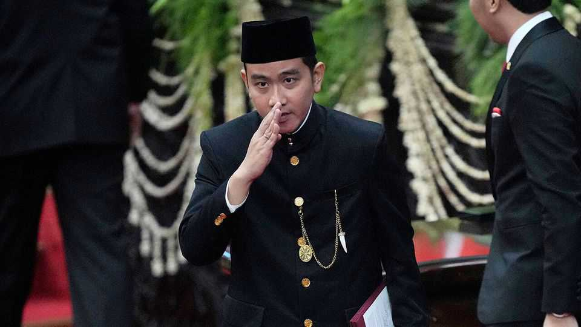

Indonesia’s vice-president resigns, escalating a destabilising feud
It could pit the country’s army and police against each other

Nov 12th 2026
ON PAPER, THE resignation of Indonesia’s vice-president on November 11th was a simple question of eligibility. Indonesia’s electoral law requires that the vice-president possess a secondary-school diploma or its equivalent. Gibran Rakabuming Raka, who was elected in 2024, can do one better: he has a university degree. But on October 30th Indonesia’s Supreme Court ruled that he had got into university without completing high school. In the days that followed, over 120 members of parliament called for his impeachment. Mr Gibran leapt before he was pushed.
In practice, however, there is little that is black and white about the latest trouble in a tumultuous year for Indonesian politics. The vice-president’s resignation comes amid the collapse of a political partnership between President Prabowo Subianto and Mr Gibran’s father, the former president Joko Widodo. The break between the two looks set to plunge Indonesian politics into further uncertainty.
Jokowi, as the former president is known, defeated Mr Prabowo in bitter presidential elections in 2014 and 2019, going on to lead the country for ten years. The two later reconciled, and a term-limited Jokowi offered up his son to serve as Mr Prabowo’s running-mate in the 2024 election. The unity ticket coasted to victory, cheered on by Indonesians happy at last to be offered political stability.
Little of that stability has been on display in recent months, however. As markets and voters turned against Mr Prabowo’s populist economic policies, the condominium between the president and his predecessor has come under strain. A break came on November 3rd, when police arrested Police General Listyo Sigit Prabowo (no relation to the president). Mr Listyo had just stepped down as the country’s top cop. Authorities now allege he had used the force’s wiretapping powers to snoop on Mr Prabowo’s communications.
That might seem a straightforward allegation of abuse of power, but for Mr Listyo’s long and close association with Jokowi. Mr Listyo owed his job to Jokowi. More than that, he was part of a close circle of officials with whom Jokowi worked before he became president, when Jokowi was mayor of the small city of Solo in Central Java and Mr Listyo was his police chief. After Jokowi was elected president, Mr Listyo rose rapidly. Authorities have not said that Mr Listyo bugged Mr Prabowo at Jokowi’s behest. But the links between the two men have raised suspicions among those close to the president. Under Mr Listyo, the police discouraged opposition to Jokowi’s administration, filing frivolous charges against critics and breaking up peaceful protests.
Jokowi leaned on the police in part because soldiers have long been more sympathetic to Mr Prabowo, a former army special-forces commander. The two forces have had a sometimes bloody rivalry ever since the police were carved out of the army in 1999. One risk, then, is that as relations between the two presidents fracture, each will use units loyal to them to seek advantage against the other. This could amp up tensions between two large groups of men with guns. Already there are signs of this. On the evening of Mr Listyo’s arrest, Mr Prabowo ordered 21,000 troops to urgently deploy to Jakarta, the capital.
That sets the stage for a tense environment as parliament prepares to fill the three years remaining in Mr Gibran’s term as vice-president. In the coming days the president will nominate two candidates, and the parliament will elect one of them as vice-president. Mr Prabowo enjoys a docile chamber, and will certainly get his pick of deputy. Undoubtedly a high-school diploma will be required this time. Unquestioning loyalty will be essential, too. ■
For exclusive coverage of Asian politics, economics and security, sign up to Asia Bulletin, our weekly subscriber-only newsletter.